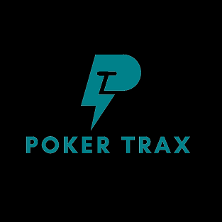
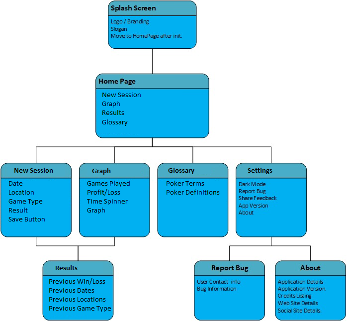
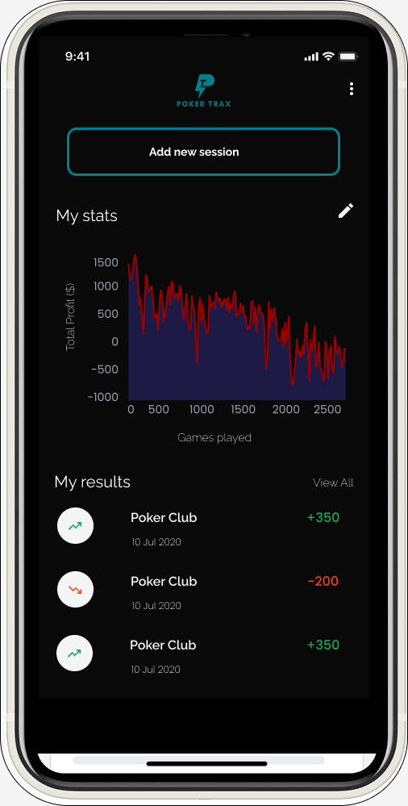
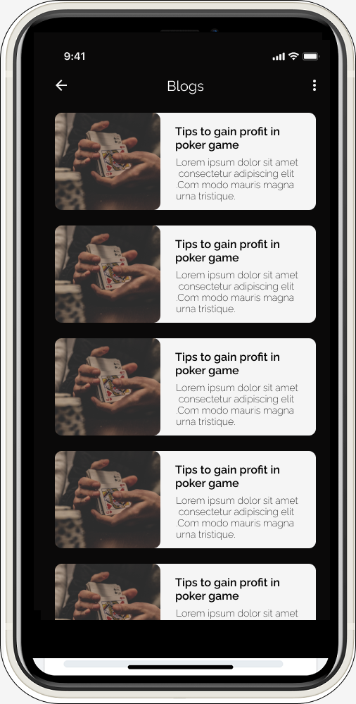
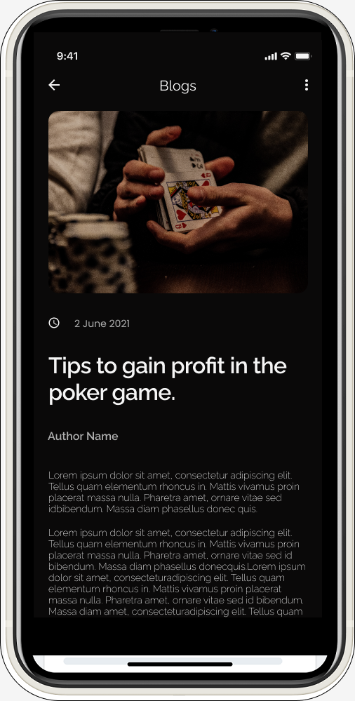

PokerTRAX App
Learn, track and improve your poker game

Poker is a game that relies upon continuous education, reflection, and
improvement. For players that play live poker, keeping track of their
statistics can prove challenging. The mission of this project is to
provide users with the ability to track the results of their live poker
sessions from the convenience of their mobile device. The Poker Trax
application [see Diagram 1] will allow users to enter in the location,
duration, buy-in (money risked), and cash-out (money gained/lost) of the
poker games they attend. The application will then use this information to
show the users their hourly win/loss rate, overall profits, and understand
what environments and scenarios they not only thrive in, but also struggle
in.
Collaboration: Myself, and 2 fellow students.
Language: Kotlin
Operating System: Android
Technologies and Frameworks used:
- Kotlin
- Android Studio
- Room
- SQLite
- XML
- GIT
- Glide
My Colour Scheme
Font-Family: Raleway
How it started

This app is all about features and content galore. The focus was to keep
our users engaged and inside the app for as long as possible. Between the
stats tracker, graphs, and educational blogs, the PokerTRAX app is a must
have for serious poker players.
How it's going



When you think about playing poker, you think about the nightlife, and the
backroom session grinds. The PokerTRAX app embraces this with it's dark
theme and sleek images. Any poker player would be proud to open this app
while at the poker table with friends, and competitors alike!.